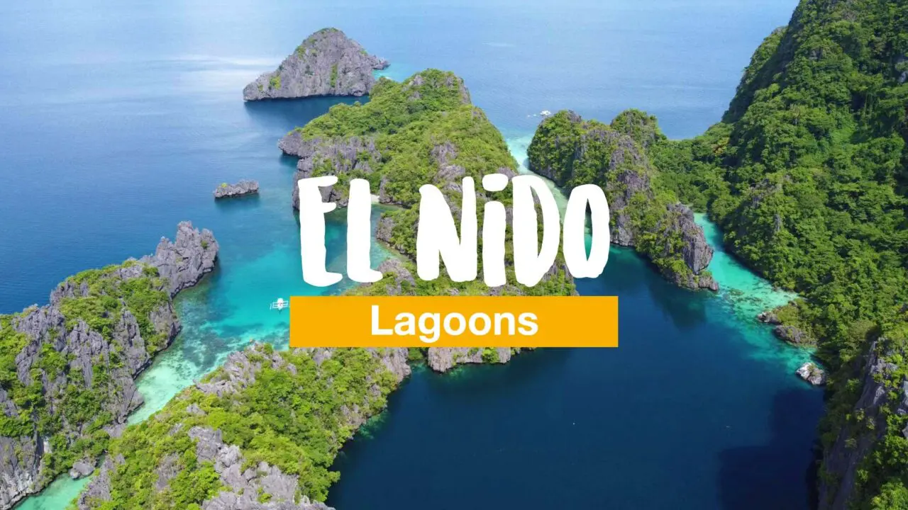
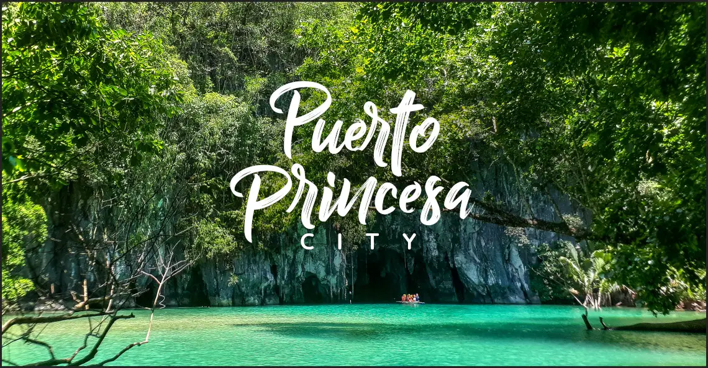
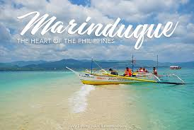

Popular Destinations
El Nido, Palawan
El Nido is famous for its towering limestone cliffs, crystal-clear lagoons, and vibrant marine life. It's a UNESCO-declared protected area perfect for island hopping and kayaking. Visitors can explore hidden beaches and enjoy breathtaking sunsets.
Location: Palawan Province
Puerto Princesa, Palawan
The capital city offers access to the stunning Sabang Underground River, a UNESCO World Heritage Site. Explore pristine beaches, firefly-watching tours, and local markets. It's a gateway to Palawan's natural wonders.
Location: Palawan Province
Coron, Palawan

Known for its WWII shipwrecks and turquoise lakes, Coron is a diver's paradise. Kayak through hidden lagoons, hike to viewpoints, and relax on white-sand beaches. The area is rich in history and underwater adventures.
Location: Palawan Province
Sabang, Romblon
Sabang is a serene coastal town renowned for its powdery white-sand beaches, clear turquoise waters, and laid-back island vibe. Perfect for swimming, snorkeling, and beachcombing, it offers a peaceful escape with opportunities to explore nearby islands and enjoy fresh seafood at local eateries.
Location: Romblon Province
Romblon Province

Romblon Province, known as the "Marble Capital of the Philippines," features stunning marble cliffs, pristine beaches, and vibrant festivals like the Binirayan Festival. Explore Tablas Island for hiking, diving, and cultural sites, or relax on Sibuyan Island's untouched shores. It's a hidden gem for eco-tourism and adventure seekers.
Location: Romblon Province
Marinduque
Marinduque, the "Heart of the Philippines," is celebrated for its rich cultural heritage, including the famous Moriones Festival. Discover pristine beaches, hike to Mount Malindig for panoramic views, and explore caves and waterfalls. It's ideal for history buffs and nature lovers seeking an authentic island experience.
Location: Marinduque Province